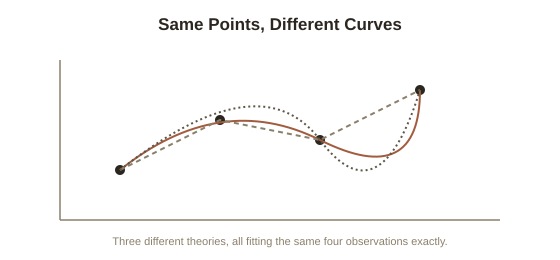

Chapter 2: Underdetermination — When the Same Evidence Fits Multiple Theories
Chapter 1 covered how a theory earns the label "scientific" — through falsifiability, and through surviving inside Kuhn's cycle of normal science and revolution. This chapter tackles a quieter, more unsettling problem that sits underneath both accounts: even a theory that has passed every test it's faced so far isn't necessarily the only theory that could explain the same evidence.
The same data, more than one true story
Underdetermination (the situation where a body of evidence is compatible with more than one theory, such that the evidence alone can't logically single out one as correct) is easiest to see with a simple geometric case: given any finite set of data points on a graph, there are infinitely many different curves that could be drawn through them exactly — the data alone never uniquely picks one out, only future data (not yet collected) could rule some of them out, and even that only narrows the field, it never gets it down to exactly one, because there's always another curve that fits every point collected so far and diverges only beyond it. The same structure applies to full scientific theories, not just curves on a graph: two theories can make identical predictions about everything observed so far, while disagreeing sharply about unobserved cases, or about what's really going on underneath the observations.
A real historical case: two ways to read the same astronomical data
Before Copernicus displaced it, the Ptolemaic model placed Earth at the center of the universe, with the sun and planets orbiting it — but by the time of astronomer Tycho Brahe in the late 1500s, this had been elaborated with enough additional adjustments (epicycles — smaller circles riding on the main orbits) that it could predict planetary positions with real, useful accuracy. Brahe himself proposed a genuine third option, now called the Tychonic model: the sun and moon orbit a stationary Earth, but the other five known planets orbit the sun. For decades, all three models — geocentric, Tychonic, and the heliocentric model Copernicus and later Galileo championed — could be tuned to fit the observational data of the time reasonably well, because naked-eye astronomy simply couldn't yet distinguish between them with the available instruments. Deciding between them required more than staring harder at the same data; it eventually took new kinds of evidence Galileo's telescope could gather (like the phases of Venus, which only the heliocentric and Tychonic models could explain) that the earlier data hadn't been able to provide.

Why this doesn't collapse into "anything goes"
It's tempting to read underdetermination as license for total relativism about theories — if evidence never uniquely picks a winner, why prefer any theory at all? Working scientists and most philosophers of science reject that leap, for a specific reason: while evidence alone may not force a unique choice, theories can still be compared on other grounds that aren't arbitrary — parsimony (preferring the theory that requires fewer additional assumptions to work — often called Occam's razor), explanatory scope (does it explain more phenomena, not just the ones it was built to fit), and fruitfulness (does it generate new, testable predictions, the way the heliocentric model eventually did, and the endlessly-patched geocentric model increasingly didn't). Underdetermination shows that evidence alone can't logically force a unique answer — it doesn't show that all remaining candidates are equally reasonable to believe.
Why the problem never fully goes away
Underdetermination isn't a temporary gap that better instruments eventually close for good — new, more precise measurements typically resolve one round of underdetermination (as the telescope did for the geocentric-versus-heliocentric case) while opening up fresh underdetermination at whatever new level of detail those measurements now describe. This is part of why Chapter 1's falsificationism, on its own, was never quite a complete account of how theory choice actually works: falsifying one specific version of a theory rules that version out, but rarely rules out every possible variant capable of explaining the same surviving data, which is exactly the gap the next chapter's problem digs into even further.
Try this
Ideas for noticing or testing this in your own life.
- Think of a pattern you've confidently explained one way (a trend at work, a habit in a relationship, a market movement) and try to construct one genuinely different explanation that fits the same facts equally well — notice how hard, or easy, that turns out to be.
- Next time you hear "the data proves X," ask what other theory would have produced the exact same data — if you can name one, the data alone isn't doing the proving; something else (parsimony, scope, prior plausibility) is.
Worth pulling on?
A few loose threads from this chapter — if any of these genuinely grab you, that's a good sign of where to go next.
- Underdetermination gets even sharper once you notice that no single hypothesis is ever actually tested completely alone — it always comes bundled with a pile of background assumptions about the instruments and auxiliary theories used to test it. → The subject of the next chapter: the Duhem-Quine problem.
- If evidence never fully settles which theory is correct, that raises a deeper question about what a scientific theory is even supposed to be doing — describing what's really out there, or just organizing predictions usefully. → Covered two chapters ahead: scientific realism versus instrumentalism.